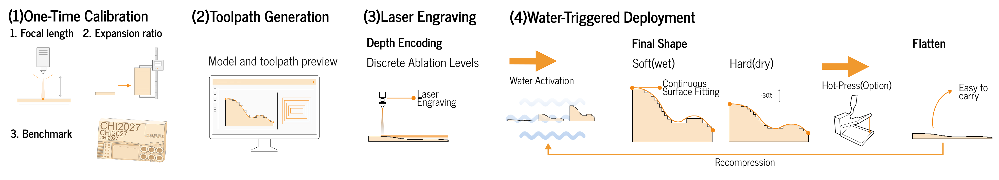
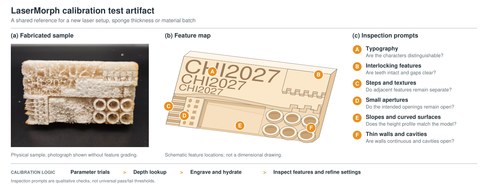

Mechanism and Fabrication
The Mechanism and Fabrication section explains the principles and processes behind LaserMorph. It is divided into four main parts: First, it describes how the system works, including the workflow, mechanism, and advantages. Then, it covers the preparation of materials, the environment, and the necessary equipment. The section continues with a detailed fabrication process, including pre-processing, calibration, laser cutting, and activation. Finally, it discusses key laser parameters and provides tips for successful fabrication, along with application examples. Each part provides a clear step-by-step guide to understanding and implementing LaserMorph.

Understand How It Works
The Understand How It Works section is organized into three key parts: Workflow, Mechanism, and Advantages. The Workflow section explains the step-by-step process of how LaserMorph operates. The Mechanism part dives into the technical principles behind the transformation from 2D to 3D forms using laser processing. Finally, the Advantages section highlights the benefits of using this method, such as its efficiency and the ability to create complex 3D shapes without the need for intricate models or molds.
Workflow

LaserMorph follows four stages: one-time calibration, toolpath generation, laser engraving, and water-triggered deployment. Local engraving depth programs thickness recovery in compressed cellulose sponge, supporting rapid fabrication of approximate soft 3D forms.
- One-Time Calibration
Before fabrication, calibrate a new laser setup or sponge batch using small test pieces. Record the relationship between power percentage, scanning speed, and engraving depth. Reuse the resulting profile for subsequent designs under the same conditions, and recalibrate when those conditions change. - Toolpath Generation
Import a target geometry and select the laser module and engraving mode. Using the corresponding calibration profile, the Rhino/Grasshopper design tool converts geometry into contour-based toolpaths with assigned scanning speeds. A volumetric preview supports design decisions, and DXF toolpaths or G-code can be exported for fabrication. - Laser Engraving
Engrave a dry compressed sponge sheet using the generated paths and calibrated settings. Single-sided engraving creates height fields, textures, and reliefs. Double- or multi-sided engraving supports more complete soft 3D geometries and requires careful positioning and alignment. - Water-Triggered Deployment:
Immersing the engraved sponge in room-temperature water restores the compressed material according to its remaining thickness, producing the programmed 3D shape. After drying, the deployed geometry is temporarily retained. For storage and reuse, the object can be heat-pressed back into a thin sheet, enabling repeated flat-to-3D deployment.
Mechanism

LaserMorph uses laser engraving to control local thickness recovery in pre-compressed cellulose sponge. Power percentage and scanning speed determine the material removed under calibrated conditions. The remaining thickness recovers primarily along the compression direction when immersed in water, producing programmed height differences and approximate 3D geometry.
LaserMorph combines planar laser processing with hydration-driven thickness recovery. Single-sided engraving supports height fields, textures, and reliefs; double- and multi-sided processing extend the range of volumetric forms. Modular joining supports objects larger than a single fabrication area.
The design space progresses from local slopes to curved surfaces and 2.5D features, then to approximate 3D volumes. The goal is to preserve the main spatial characteristics of a design. Fiber and pore variability, local thermal effects, and expansion and shrinkage limit the reproducibility of fine details and sharp edges.
Immersion in room-temperature water triggers rapid recovery of the compressed material. The hydrated object is soft and compliant. Drying takes longer, hardens the material, and changes its dimensions; hydration does not immediately produce a dry, rigid object.

Repeated deployment was evaluated using 12 specimens across 15 reuse cycles. At cycle 15, mean dry-state thickness retention across the 12 specimens was 84.4% ± 5.1%, relative to each specimen’s first hydration–drying baseline. The six thickness-group means ranged from 77.3% to 92.5%. These measurements describe thickness retention, not complete 3D shape fidelity or long-term fatigue resistance.
Calibration links processing parameters to measured depth under a particular machine and material configuration. The resulting forms are suited to low- to medium-fidelity prototyping, flat-pack deployment, and tangible interaction. Precision assembly, substantial load-bearing capacity, and long-term dimensional stability require other materials or fabrication methods.
Advantages
LaserMorph supports mold-free, water-triggered fabrication of approximate volumetric forms from compressed cellulose sponge. Its practical advantages concern form exploration, compact storage, and repeated deployment:
- No Molds Required
Local laser engraving encodes thickness recovery directly in the sponge. Individual forms can deploy without a mold; larger modular objects may still require joining or assembly. - Water-Triggered Deployment
Room-temperature water releases the programmed thickness recovery without thermal activation. The deployed material is initially soft; subsequent drying produces a harder state. - Reusability
Dried objects can be recompressed and hydrated again. The 15-cycle experiment measured thickness retention with some loss over repeated use, so designs should allow for changes in thickness rather than assume perfect recovery. - Rapid Form Prototyping
The method uses commercially available equipment and is intended for laser-equipped prototyping spaces. Demonstrated examples show time savings for volumetric form models; performance depends on the object and fabrication setup. - Compressible for Transport
After drying, heat and pressure can return an object to a thin sheet for storage and subsequent deployment. Manual compression is also possible, but is less uniform and leaves a thicker sheet than machine pressing.
LaserMorph provides a complementary fabrication method for reusable form prototypes and tangible artifacts. Its value lies in rapid volumetric approximation and compact storage, with material variability and drying time remaining practical constraints.
Material Preparation
This section introduces two key aspects: Material and Equipment. The compressed cellulose sponge is available in various thicknesses, and standard laser cutting platforms are used for engraving the material before the activation process.
Material
LaserMorph uses commercially available compressed cellulose sponge. The expansion study tested 35 specimens in six nominal thickness groups: 1.2, 1.5, 2, 3, 6, and 10 mm. The material is cellulose-based and biodegradable; processing behavior should be calibrated for the selected thickness group and material batch.
Across the six tested thickness groups, mean thickness ratios after first hydration ranged from 8.39 to 13.30 relative to each specimen’s measured initial thickness. Mean shrinkage during subsequent drying ranged from 17.4% to 32.0% of hydrated thickness. These are ranges of group means, not a universal expansion constant. Mean in-plane changes after hydration were 6.6% ± 3.6% in length and 6.8% ± 4.6% in width across the 35 specimens, which also matters when sizing and joining parts.
Equipment
The workflow uses standard laser cutting hardware, compressed cellulose sponge, water, and a heat press for more uniform recompression. The reported depth calibration used a 20 W laser module. Calibrate again when changing the laser setup, material batch, thickness, focus, scan spacing, or pass count; a calibration profile does not establish uniform accuracy across machines.
Fabrication
Fabrication combines preparation, calibration, toolpath generation, engraving, and water-triggered deployment. The following steps connect the digital model to the material’s measured depth and thickness recovery under the selected conditions.
Pre-processing Preparation
Before laser cutting, ensure the compressed cellulose sponge is flat, dry, and securely placed on the laser bed. Material thickness should be consistent across the working area.
Calibration
For the original 20 W setup, use the Laser Calibration tool to explore measured groove depths after hydration and interpolate between supported power and speed settings. Other materials, machines and processing conditions require their own calibration.

Since fabrication results vary across laser platforms and sponge thicknesses, users first fabricate a standardized calibration sample to identify appropriate processing parameters for their setup. The calibration process includes:
- Parameter Testing: Test power percentage, scanning speed (mm/min), and line spacing on small samples. After fixing spacing and other conditions, measure the power–speed–depth relationship and use lookup or interpolation within the calibrated range. Do not assume a perfectly monotonic response for every measured sample.
- Standard Test Sample: Inspect text at different heights, textures and gaps, interlocking features, thin walls, slopes, and curved features after engraving and hydration. The study reports readable character heights around 0.75–1.0 cm and recommends at least 1.0 cm in practice. A minimum wall thickness around 0.8 mm is a sample-based guideline to reduce collapse or tearing risk, not a guarantee of stability. The artifact complements dimensional measurements under the current equipment and material conditions.
Record thickness removed from the dry compressed sheet separately from groove depth after hydration. Use the parameter lookup table and interpolation within the measured range to select settings for a target depth. The reported 20 W calibration covered 10–100% power and 1,000–9,000 mm/min; the hydrated groove depth used in planning is not the dry thickness removed.
Laser Cutting
The laser cutter engraves the material based on design paths, encoding geometric information that triggers 3D transformation during activation. The design tool converts geometric intent into toolpaths, assigning different depths through calibrated power and speed parameters. Output files include DXF path files and G-code for machine execution.
Activation
Morphing can be used as an optional design strategy through four material-state transitions. Drying shrinkage and losses during repeated use should be included when estimating the resulting geometry:
- Hydration-driven Expansion (Compressed → Expanded): Room-temperature water triggers thickness recovery and reveals the programmed soft geometry. Mean thickness ratios ranged from 8.39 to 13.30 across the six tested thickness groups; calibrate the ratio for the selected material.
- Sealing (Expanded → Maintained Expansion): A physical barrier, such as plastic film, slows evaporation and prolongs the compliant state. It supports temporary shape maintenance rather than permanent dimensional stability.
- Drying and Hardening (Expanded → Dry): As moisture evaporates naturally or through forced airflow, the material hardens into a self-supporting form. It also shrinks: group mean thickness shrinkage after first drying ranged from 17.4% to 32.0% of hydrated thickness.
- Recompression (Dry → Compressed): Heating to 120°C while applying pressure flattens the dried object for storage and reuse. Hand compression is less uniform and produces a thicker sheet. Repeated deployment should allow for thickness loss.